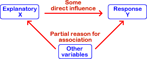
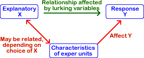
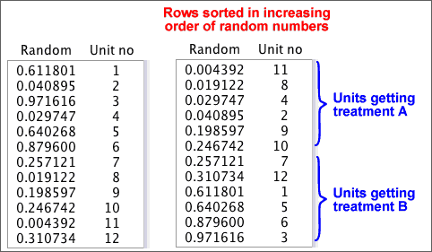

If you don't want to print now,
Relationship between variables
We are often interested in relationships between variables. The correlation between two numerical variables summarises their relationship; a contingency table contains information about the relationship between two categorical variables.
When the individuals can be split into groups, a categorical variable can be used to define group membership. Differences between the groups can then be expressed as a relationship between the grouping variable and other variables. The following questions are essentially asking the same in two different ways:
In some situations, the relationship between two variables, such as the relationship evident in a scatterplot, may not describe a meaningful 'real' relationship.
Relationships can be much harder to interpret than you might think
When two variables are related, we say that there is association between them.
Causal relationships
A causal relationship arises when we can conclude that one variable has a direct influence on the other.
Non-causal relationships
In non-causal relationships, the association between the two variables is not completely the result of one variable directly affecting the other.
 |
 |
If two variables are not causally related, it is impossible to tell whether changes to one variable, X, will result in changes to the other variable, Y.
The scatterplot below shows data from a sample of towns in a region. Neither variable directly affects the other. (The size of the towns is a lurking variable since larger towns have more churches and also more deaths.)

Is a relationship causal?
Investigators usually hope to find causal relationships between the variables that are recorded. If one variable causally affects the other, then adjusting the value of that variable will cause the other to change.
Causality can only be determined by reasoning about how the data were collected. The data values themselves contain no information that can help you to decide.
Lurking variables
Non-causal relationships between two variables usually result from the effect of further variables called lurking variables that are related to the variables under investigation. Causal relationships can only be deduced if it can be reasoned that lurking variables are not present.
Individuals / units
Most data sets consist of one or more values that are recorded from each of a set of individuals (or plants, plots of land, repetitions of an experiment or other 'units'). There are two different ways in which data can be collected from these units.
Types of data collection
In an observational study, we passively record (observe) values from each unit. Usually these units are sampled from some population.
In an experiment, the researcher actively changes some characteristics of the units before the data are collected. The values of some variables are therefore under the control of the experimenter. In other words, the experimenter is able to choose each individual's values for some variables.
Observational studies and experiments
The method of data collection has a major influence on whether a relationship can be interpreted as causal.
In a badly designed experiment however, lurking variables can still cause difficulties in interpreting relationships.
Estimation
The aim of sampling is usually to estimate one or more population values (parameters) from a sample. Because we do not have complete information about the population, the estimate is unlikely to be exactly same as the value that we are estimating, so we call the difference the error in the estimate. There are different kinds of error.
Sampling error
Taking a random sample from a population involves randomness in the sample-selection process. The error caused by randomness in the sampling process is called sampling error.
Non-sampling error
When sampling from some types of population — especially human populations — problems often arise when conducting one of the above sampling schemes. For example, some sampled people are likely to refuse to participate in your study.
Such difficulties also result in errors and these are called non-sampling errors. Non-sampling errors can be much higher than sampling errors and are much more serious.
It is therefore important to design a survey to minimise the risk of non-sampling errors.
'Missing' responses
The first two types of non-sampling error are caused by failure to obtain information from some members of the target population.
Coverage error
Coverage error occurs when the sample is not selected from the target population, but from only part of the target population. As a result, the estimates that are obtained do not describe the whole target population — only a subgroup of it.
Non-response error
In many surveys, some selected individuals do not respond. This may be caused by ...
If non-response is related to the questions being asked, estimates from the survey are likely to be biased.
'Inaccurate' responses
The next two types of non-sampling error are caused by inaccurate information being obtained from the sampled individuals.
Instrument error
Instrument error usually results from poorly designed questions. Different wording of questions can lead to different answers being given by a respondent. The wording of the question may be such as to elicit some particular response (a leading question) or it may simply be carelessly worded so that it is misinterpreted by some respondents.
Interviewer error
Interviewer error occurs when some characteristic of the interviewer, such as age or sex, affects the way in which respondents answer questions.
There are various different ways to collect information from human populations. Each method has its advantages and disadvantages.
Telephone
Mailed questionnaire
Interviewer
Houses are rarely selected at random. Often streets are randomly selected and every 5th or 10th house in the street is approached. This is called a systematic sample.
Street corner
Some surveys are conducted by approaching people in busy shopping centres or similar public places.
To reduce coverage errors, a quota sample is often used. Each interviewer is told to interview fixed numbers of old, young, male, female, etc. respondents to match the corresponding proportion in the target population.
Self-selected
Phone-in or mail-in surveys are often conducted by radio stations and magazines. The respondents are usually so unrepresentative that the results are meaningless. These types of survey should be avoided.
Reason for conducting an experiment
An experiment looks for a causal relationship between a response and one or more explanatory variables.
Experimental units
Experiments are generally conducted on a set of experimental units. Depending on the type of experiment, these units could be people, animals, trees, areas in a field, shops in a retail chain, ...
In the experiments that we will examine here, a single response measurement is made from each experimental unit.
Factors and treatments
The researcher has control over some aspect of each unit. These controlled characteristics are explanatory variables and are called factors in the context of an experiment. The different values of the controlled characteristics are called experimental treatments.
Experimental design
The decision about which treatment is applied to each experimental unit is called the experimental design.
Differences between experimental units
In practice, it is usually impossible to conduct experiments with experimental units that are identical. The experimental units usually have characteristics that vary from unit to unit.
These differences between the experimental units result in variability in the response measurements that are made from them, even if all receive the same treatment.
Bad experimental design
If the treatments are allocated to experimental units in a way that is associated with their naturally varying characteristics, the apparent relationship between the treatments and the response can be distorted.

This is similar to the effect of lurking variables in observational studies.

Good experimental design can avoid the potential effect of lurking variables.
Confounding
The design of an experiment may make it impossible to disentangle the effects of the treatment and other characteristics of the experimental uits. If the treatment is perfectly correlated with another variable, the effects of the two variables cannot be distinguished. The treatment and variable are then said to be confounded.
It is particularly important to avoid confounding in an experiment.
In an experiment, treatment A was applied to 10 experimental units in 2010 and treatment B was used on 10 similar units in 2011.

It is impossible to tell whether the higher mean response for treatment A than treatment B was caused by the different treatments or other differences between the two years.
Avoiding lurking variables
An important goal of experimental design is to minimise association between allocation of the treatments and characteristics of the experimental units.
If the varying characteristics of the experimental units are understood and measured before the experiment is conducted, treatments can be allocated to ensure that there is no association. (See the later page about blocking in experiments.)
Randomisation
When the differing characteristics of the experimental units are unmeasured, association between them and the treatments can be minimised by randomly allocating treatments to the experimental units. This is called randomisation of the treatments and the experimental design is called a completely randomised design.
Randomisation does not guarantee that there will be no association between the treatments and characteristics of the experimental units — by chance, there may be some association. However...
Randomisation means that is unlikely that such lurking variables will affect the conclusions.
Mechanics of randomisation
The simplest way to randomise allocation of treatments to the experimental units is:
Finding the random permutation is fairly easy in a spreadsheet such as Microsoft Excel:
This gives a random permutation of the numbers 1 to n.

Causes of variation
In a completely randomised experiment,
Distinguishing the treatment effect and random variation
To find the effect of the treatments on the response, it is essentionl that we can distinguish it from random variation.
There must be enough data to estimate random variation separately from variation caused by the treatments.
Replication involves repeat measurements for each treatment. The variation within each treatment is all random variation.
Understanding the amount of random variation is necessary before you can interpret the effect of the treatments.